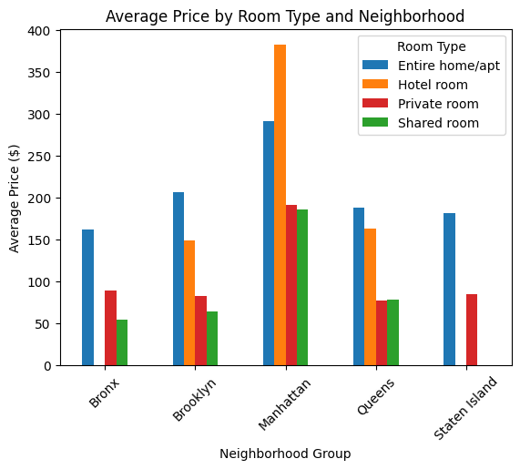
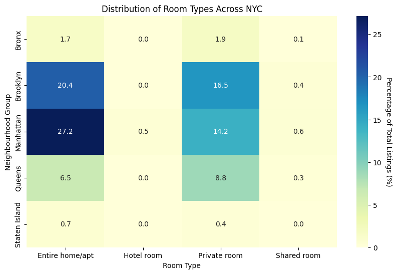

NYC Airbnb 2021 Data Insights and Analysis
Introduction
Our project aims to conduct an in-depth examination of New York City
Airbnb listings, leveraging publicly available data to reveal insights
into patterns, trends, and factors shaping the short-term rental market in
one of the world's most populous cities. Given the rise of the sharing
economy and the increasing popularity of platforms like Airbnb,
understanding the dynamics of listings is crucial. By focusing on
benefiting travelers seeking accommodations in New York City, our research
provides visually accessible insights to empower them to make informed
decisions about their lodging options.
The following links lead to academic journals that have conducted similar
analyses on NYC Airbnb data insights. Access to the papers may require an
institutional login:
Data Overview
Our analysis utilizes the Inside Airbnb: NYC dataset from Kaggle called
`NYC_Airbnb.csv` to conduct a comprehensive data analysis of New York City
Airbnb listings. The Inside Airbnb: NYC dataset from Kaggle consists of
over 37,000 observations and 74 attributes, covering both categorical and
continuous variables. Our final cleaned dataset consists of 37,410 rows
and 25 columns. The dataset includes essential details such as host
information, room type, neighborhood information, pricing, availability,
and guest reviews. The detailed information about the features is listed
in the following table:
| Variable Name |
Details |
| id |
Listing ID |
| listing_url |
Listing URL |
| name |
Listing Name |
| latitude |
Latitude of the listing |
| longitude |
Longitude of the listing |
| last_scraped |
Date that the information was last scraped |
| host_id |
Host ID |
| host_name |
Host Name |
| host_listings_count |
Number of Listings Held by the Host |
| neighbourhood_cleansed |
Neighbourhood |
| neighbourhood_group_cleansed |
Neighbourhood Group |
| room_type |
Room Type |
| accommodates |
Number of Accommodates |
| price |
Price of the Listing |
| minimum_nights |
Minimum Number of Nights |
| maximum_nights |
Maximum Number of Nights |
| number_of_reviews |
Number of Reviews |
| review_scores_rating |
Overall Rating Review Score |
| review_scores_accuracy |
Accuracy Review Score |
| review_scores_cleanliness |
Cleanliness Review Score |
| review_scores_checkin |
Checkin Review Score |
| review_scores_communication |
Communication Review Score |
| review_scores_location |
Location Review Score |
| review_scores_value |
Value Review Score |
| reviews_per_month |
Average Number of Reviews per Month |
Choropleth Map of NYC Neighborhoods
In this choropleth map showcasing NYC's Airbnb landscape, we've utilized
Shapely points to pinpoint the precise locations of listings within the
dataset. By organizing listings according to neighborhood, we offer
insightful average prices and review scores for each area. Employing
convex hull polygons, we outline the geographic boundaries of these
neighborhoods, enhancing them with important details such as average price
and review score. The color scheme intuitively represents the relative
average price of each neighborhood, enabling users to swiftly identify
areas within their budget. Hovering over the polygons reveals the names of
neighborhoods, while clicking provides comprehensive averages for price
and review scores. This interactive feature allows potential customers to
identify neighborhoods that fit their budget and review score standards,
facilitating informed decision-making.
Generally, the majority of neighborhoods in NYC offer prices below $250
per night, though a few, such as Tribeca and Prospect Park, boast average
prices of $559.38 and $501.50 per night, respectively. Additionally, the
average review scores tend to be consistently high, with most
neighborhoods receiving scores above 4.5. The interactive map provides
users with the opportunity to explore the distribution of prices and
review scores across NYC neighborhoods, empowering them to make
well-informed decisions about where to stay according to their preferences
and budget constraints.
Bar Chart: Average Price by Room Type and Neighborhood

The bar chart illustrates the average prices of various room types
across neighborhoods in New York City, providing customers with
valuable insights for their accommodation choices. It underscores
significant price discrepancies among neighborhoods and offers clarity
on the most popular room types in each area. Each bar represents the
average price of a specific room type within a neighborhood, serving
as visual cues that highlight price disparities among neighborhoods.
The x-axis indicates different neighborhoods, organizing the data
spatially, while the y-axis represents average prices, facilitating
comparisons across room types and neighborhoods. This visual
representation enables customers to easily pinpoint budget-friendly
options and grasp market trends, empowering them to make well-informed
decisions tailored to their preferences and budget constraints during
their stay in New York City.
The bar chart vividly illustrates that Manhattan boasts the highest
average price across all room types, particularly for hotel rooms.
This observation highlights Manhattan's premium status in the
accommodation market and highlights the significant price discrepancy
between this borough and others in New York City.
Heatmap: Distribution of Room Types Across NYC Neighborhoods
The heatmap offers guests valuable insights into the diverse range of
room types available across New York City's neighborhoods. Each cell
in the heatmap represents a combination of room type and neighborhood,
with the presence of a mark indicating the count of listings with that
specific room type in the corresponding neighborhood. The x-axis
denotes different room types, while the y-axis represents neighborhood
groups, offering spatial organization for identifying room type
distribution. The color of each cell encodes the count of listings,
with darker shades indicating higher counts and lighter shades
representing lower counts, facilitating quick perception of room type
frequencies. Numeric annotations within cells provide precise
quantitative information, supplementing the visual encoding with exact
counts of listings.
The heatmap reveals the prevalence of different accommodation types
across neighborhoods, with entire homes/apartments dominating in
Manhattan, followed by Brooklyn and Queens. It also highlights the
popularity of private rooms in Brooklyn, followed bt Manhattan and
Queens. This information helps guests align their accommodation
preferences with neighborhood offerings, facilitating informed
decisions tailored to their needs and budget constraints.

Interactive Scatterplot: Price vs. Number of Reviews
In the interactive scatter plot below, we illustrate the relationship
between price and the number of reviews for a random sample of 5,000
listings. To enhance clarity, we capped the price at under $3,000, as the
majority of listings fell within the lower price range of $0 to $200.
However, there were a few high-price outliers around $5,000, which could
obscure the chart's readability. Each circle on the plot represents a
listing, positioned based on its price and number of reviews. These
circles are color-coded to denote different room types.
This scatterplot enables customers to evaluate listing value and
popularity by correlating price with review counts. Additionally, our
interactive tool allows users to select their preferred room type,
dynamically scaling the chart to display only listings of that type. This
feature provides users with a clearer view of the general price and review
distribution for a specific room type.
Despite our analysis, we found no clear correlation between price and the
number of reviews, with variations observed across different room types.
However, the color coding facilitates users in finding accommodations that
align with their preferences and needs, aiding them in making informed
decisions.
Interactive Scatterplot: Various Review Score Attributes
In our dataset, we found that Airbnb listings are evaluated on various
subattributes like location, cleanliness, and check-in process, which
contribute to the overall review score. Our interactive scatter plot
provides a comprehensive overview of overall review scores across NYC,
allowing users to explore individual subattributes. Positioned similarly
to a geographical map, each circle represents a listing's location based
on latitude and longitude. The color of each point corresponds to the
displayed review score attribute, with darker shades indicating higher
scores and lighter shades indicating lower scores on a scale of 1 to 5.
This color scheme aids users in quickly identifying listings with lower
scores amidst the majority of higher-scored listings.
Moreover, users can utilize the dropdown menu at the top of the plot to
select their preferred subattribute for analysis. This feature enables
users to explore the distribution of review scores based on specific
criteria, empowering them to make more informed decisions when choosing
accommodations.
Additionally, we've implemented a tooltip feature that allows users to
hover over data points to access essential details about each listing.
This includes the listing's name, price, room type, neighborhood, overall
review score, and accommodation capacity.
For example, a customer considering where to stay can utilize this feature
by selecting the location subattribute of the review score. This enables
them to identify clusters of high or low review scores, indicating
previous customers' sentiments about specific locations and neighborhoods.
For instance, our data shows that downtown Manhattan and surrounding areas
like western Brooklyn consistently receive high review scores for location
attributes. This information could influence a customer's decision when
choosing where to stay.
Similar analyses can be conducted using other subattributes, providing
users with comprehensive insights into neighborhood trends based on past
customer reviews. Ultimately, this visualization aims to offer guided
insights into the numerical review scores of Airbnb listings, assisting
users in making informed decisions regarding accommodation choices.
Summary and future work
The main findings of our analysis include:
-
Manhattan exhibits the highest average price across all room types,
indicating its premium status in the market. Additionally, entire
homes/apartments in Manhattan have the highest number of listings,
reflecting strong demand in this area.
-
The choropleth map reveals that many neighborhoods in NYC offer
relatively low average prices, providing budget-friendly options for
travelers. Despite this, there are scattered instances of lower ratings
across the city, highlighting the need for customers to consider
multiple factors when making booking decisions.
-
Our analysis suggests no clear correlation between price and the number
of reviews, further emphasizing the complexity of factors influencing
consumer choices.
Moving forward, potential next steps for research include:
-
Exploring the influence of tourist attractions and transportation hubs
on pricing and popularity.
-
Generating predictive models to forecast price and desirability of a
listing using various features like location and room type.
-
Conducting sentiment analysis on customer reviews to identify common
themes and sentiments.
-
Investigating seasonal variations in popularity and price, considering
factors like weather, holidays, and major events.
For those interested in the project, please contact: Tri Watanasuparp
(watanasuparp.t@northeastern.edu) and Jonathan Hong
(hong.jo@northeastern.edu). Thank you!